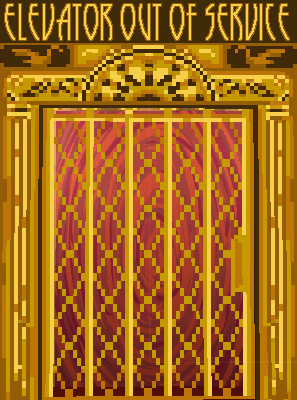

Sally Juettner
About me
I'm a game design major & creative writing minor at Columbia College Chicago. Currently I'm in my senior year and focusing on game writing and level design.
For a look at my work, click below!
Timbre is a short horror game with mic-detection features. It was created as a college capstone project.

Elevator Out of Service is a short narrative-based game about descending to the afterlife. It was created as a college capstone project.

The Raven in the Woodwork is an ongoing writing project for which I've made a Twine game, some short stories, and worldbuilding docs.
Made over the course of four weeks, The Clark Caper is a short murder mystery game set in the 1920s in which the choices the player makes determine who the victim will be.
Made in 2021 for the midterm of my Programming 1 class, this is a text-based adventure game where you play as a teen detective solving your first real live murder case.
Miscellaneous
Scripts, stories, and documents not associated with specific projects.
The Pittsburgh of websites